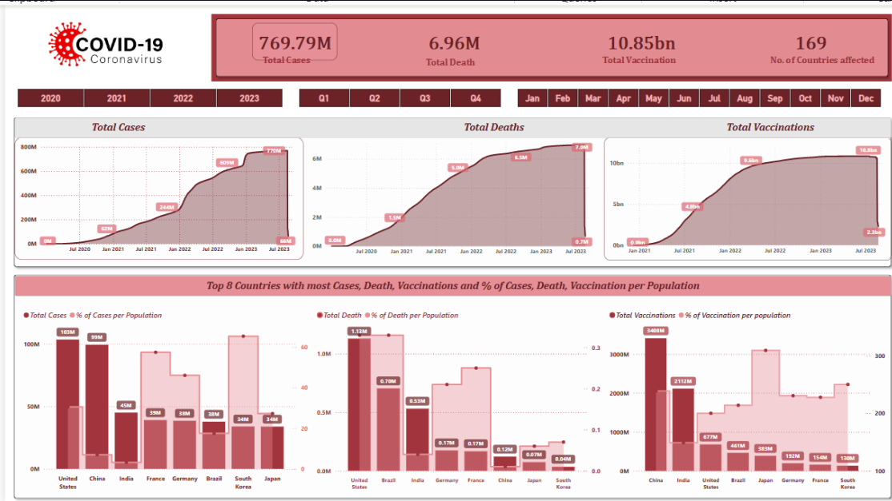
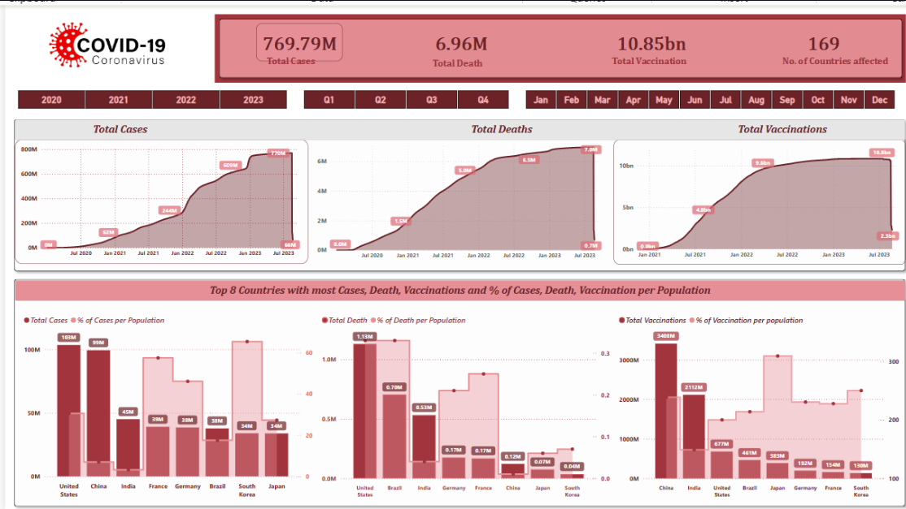
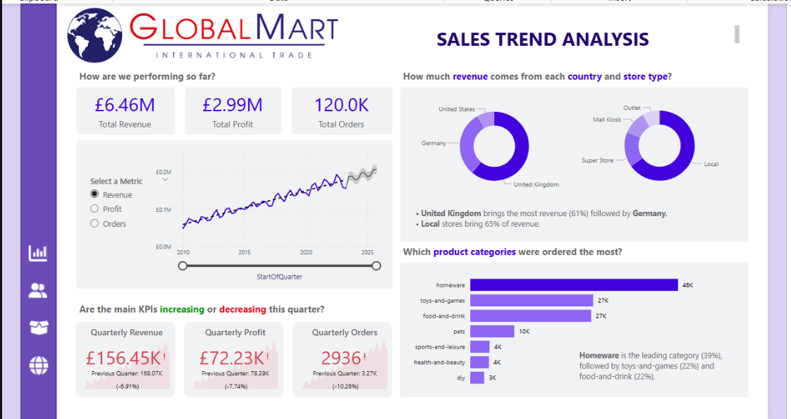
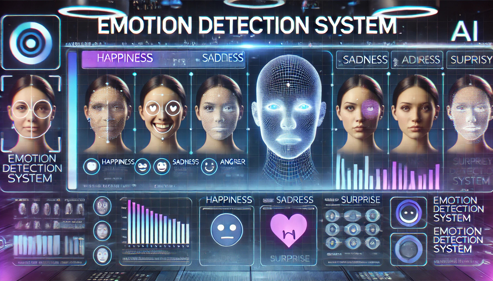

"A comprehensive dive into taxi data that unearths the city's hidden dynamics. This project meticulously cleans and analyzes millions of rides to reveal patterns in ride frequencies, fare distributions, geospatial clusters, and temporal trends. Each visualization and insight is crafted to decode the bustling rhythm of New York City's transit ecosystem, paving the way for smarter urban mobility and deeper urban storytelling."
 

"A comprehensive analysis of global COVID-19 trends, leveraging SQL for data extraction and Power BI for interactive visualizations. This project uncovers key insights into cases, deaths, and vaccinations, providing a data-driven perspective on the pandemic's impact worldwide."

"A data-driven sales analysis project utilizing Python, SQL, Excel, and Power BI to centralize, clean, and analyze sales data. This project features a structured STAR schema, advanced SQL queries, and interactive Power BI dashboards to track key business metrics, customer insights, and revenue trends, enabling strategic decision-making. 🚀📊"

"Utilizes ML and Computer Vision for live emotion recognition using a custom CNN with 70% accuracy, powered by OpenCV for face detection. The model exceeds GitHub's size limits; code is provided for local execution with GPU support."
"This project leverages machine learning to predict tennis match outcomes, comparing AI models against expert fantasy players. Using historical ATP data and fantasy predictions, models like XGBoost outperformed human forecasts, showcasing AI’s potential in sports analytics and competitive decision-making."